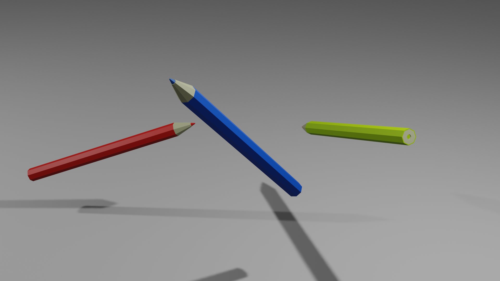
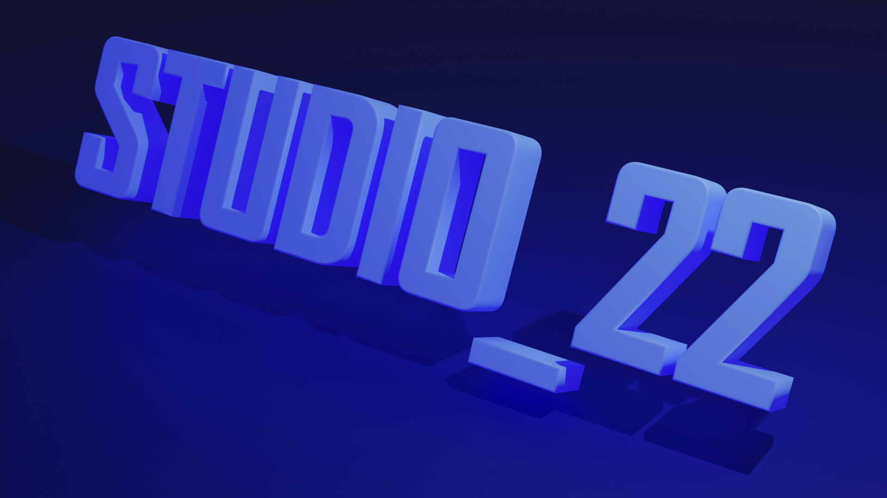
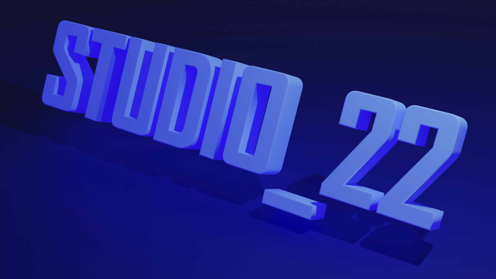

J'ai commencé la programmation en avril 2021, durant un confinement, avec Scratch. L'idée de créer mes propres jeux vidéos m'a vraiment plus, alors j'en ai créé une multitude !
Voici quelques exemples :
(Notez que vous pouvez les ouvrir dans Scratch pour qu'ils soient plus grands)
Il y a ici les meilleurs jeux que j'ai publié. J'ai créé de meilleurs jeux, mais je ne les ai jamais publié, car je les ai abandonnés.
Pourquoi Unity et pas Unreal Engine ? Parce que j'avais entendu que la courbe de progression d'Unreal Engine était plus dure, et que Unity était bien pour les jeux Indé.
Voici donc quelques projets que j'ai déjà réalisé :
Je suis donc en train d'apprendre les bases de Unity. Mon objectif est de créer un jeu en 3D isométrique.
Blender est un logiciel de modélisation 3D gratuit. Je me suis rapidement dit que j'en aurait besoin au fur et à mesure de mon parcours.
Voici quelques rendus que j'ai déjà créé :
 

Avoir un site web créé avec du code est très important pour moi : je ne veux pas d'un site "facile" à faire et à la portée de tout le monde, justement.